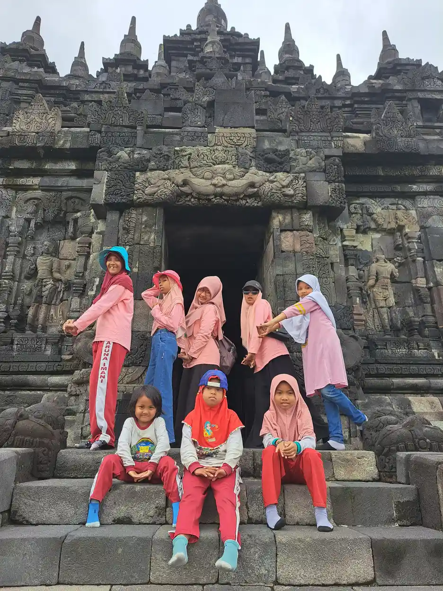
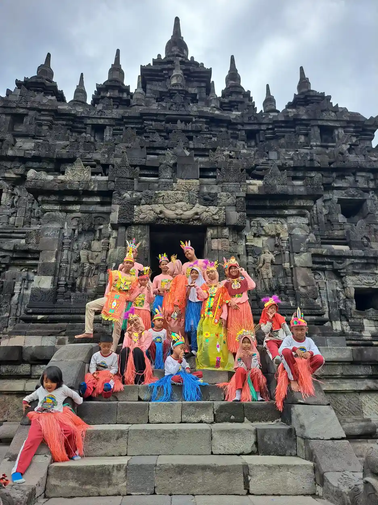
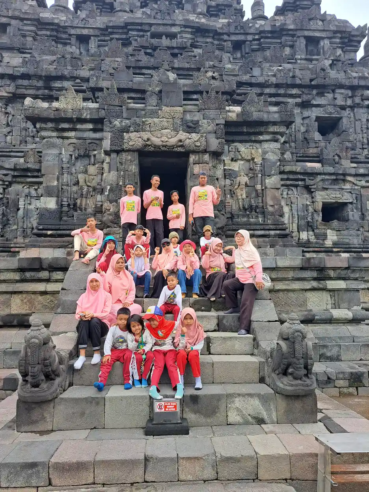
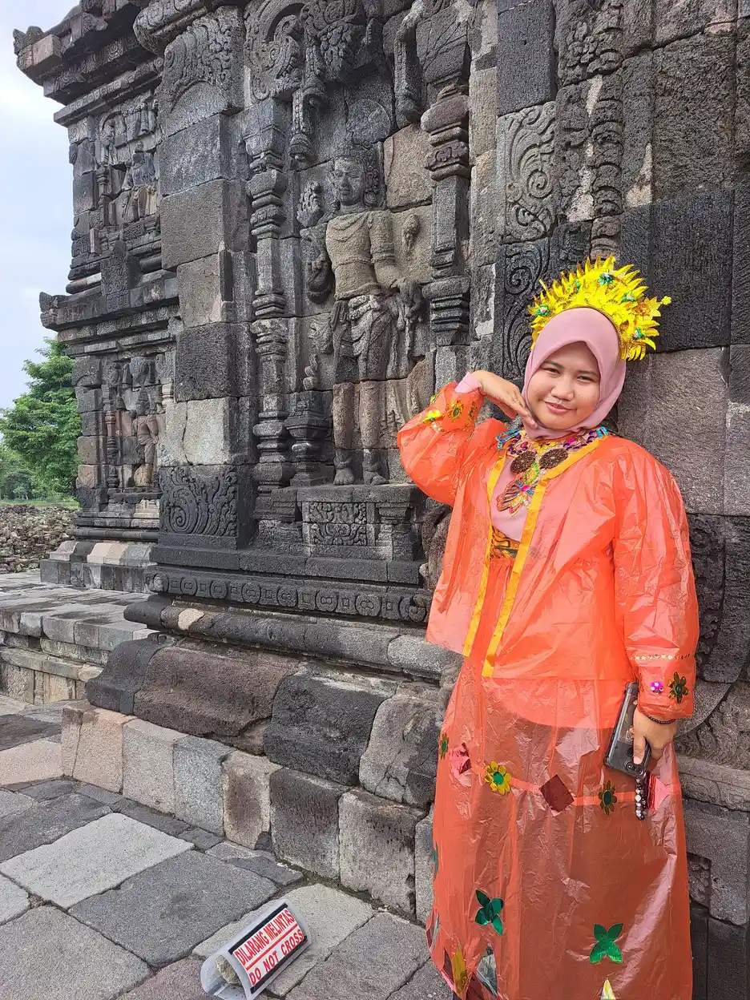

Jawaban singkat: syarat izin homeschooling di Indonesia diatur Permendikbud Nomor 129 Tahun 2014 tentang Sekolahrumah. Sekolahrumah tunggal dan majemuk wajib mendaftar ke dinas pendidikan kabupaten/kota dengan identitas orang tua dan anak, surat pernyataan tanggung jawab orang tua, surat kesediaan anak berusia 13 tahun ke atas, serta dokumen program yang memuat rencana pembelajaran. Sekolahrumah komunitas wajib memperoleh izin pendirian sebagai kelompok belajar nonformal.
Daftar Isi
- Dasar hukum homeschooling di Indonesia
- Tiga bentuk sekolahrumah dan status izinnya
- Syarat pendaftaran sekolahrumah tunggal dan majemuk
- Izin sekolahrumah komunitas
- Langkah mendaftar ke dinas pendidikan
- Kewajiban kurikulum dan mata pelajaran
- Wajib belajar dan tanggung jawab orang tua
- Penilaian, ujian kesetaraan, dan pindah ke sekolah formal
- Syarat izin homeschooling untuk anak berkebutuhan khusus
- Kesalahan umum dan checklist dokumen
- Pertanyaan yang sering diajukan
Dasar Hukum Homeschooling di Indonesia
Homeschooling di Indonesia memiliki dua lapis dasar hukum. Lapis pertama adalah Undang-Undang Nomor 20 Tahun 2003 tentang Sistem Pendidikan Nasional. Pasal 1 angka 13 mendefinisikan pendidikan informal sebagai jalur pendidikan keluarga dan lingkungan. Pasal 13 ayat (1) menyebut jalur pendidikan terdiri atas pendidikan formal, nonformal, dan informal yang dapat saling melengkapi dan memperkaya.
Pasal 27 undang-undang yang sama menjadi pijakan utama. Ayat (1) menyebut kegiatan pendidikan informal yang dilakukan keluarga dan lingkungan berbentuk kegiatan belajar secara mandiri. Ayat (2) menyatakan hasil pendidikan informal diakui sama dengan pendidikan formal dan nonformal setelah peserta didik lulus ujian sesuai standar nasional pendidikan. Artinya, belajar di rumah sah, tetapi pengakuan hasilnya tetap melalui ujian.
Lapis kedua adalah Peraturan Menteri Pendidikan dan Kebudayaan Nomor 129 Tahun 2014 tentang Sekolahrumah, ditetapkan 9 Oktober 2014 dan diundangkan dalam Berita Negara 2014 Nomor 1660. Peraturan inilah yang memuat syarat administratif. Pasal 1 angka 4 mendefinisikan sekolahrumah sebagai layanan pendidikan yang secara sadar dan terencana dilakukan orang tua atau keluarga di rumah atau tempat lain, dalam bentuk tunggal, majemuk, dan komunitas.
Saat kami periksa pada Oktober 2026, basis data peraturan.go.id mencantumkan status peraturan ini sebagai Berlaku. Bila Anda masih menimbang apakah jalur ini cocok, baca dulu ulasan homeschooling vs sekolah inklusi sebelum masuk ke urusan berkas.

Tiga Bentuk Sekolahrumah dan Status Izinnya
Pasal 5 Permendikbud 129 Tahun 2014 membagi sekolahrumah menjadi tiga bentuk. Pembedaan ini penting karena kewajiban administratifnya tidak sama. Banyak orang tua menyebut semuanya "izin homeschooling", padahal untuk dua bentuk pertama yang diatur adalah kewajiban mendaftar, sedangkan izin pendirian hanya berlaku untuk bentuk komunitas.
Sekolahrumah tunggal dilaksanakan orang tua dalam satu keluarga dan tidak bergabung dengan keluarga lain. Sekolahrumah majemuk diselenggarakan orang tua dari dua keluarga atau lebih yang melakukan satu atau lebih kegiatan pembelajaran bersama, sementara pembelajaran inti tetap di keluarga masing-masing. Sekolahrumah komunitas adalah kelompok belajar gabungan sekolahrumah majemuk yang menyusun silabus, fasilitas, waktu belajar, dan bahan ajar bersama.
| Bentuk | Penyelenggara | Kewajiban administratif | Dasar pasal |
|---|---|---|---|
| Sekolahrumah tunggal | Orang tua dalam satu keluarga, tidak bergabung dengan keluarga lain | Wajib mendaftar ke dinas pendidikan kabupaten/kota | Pasal 1 angka 5, Pasal 6 ayat (1) dan (2) |
| Sekolahrumah majemuk | Orang tua dari 2 sampai 10 keluarga, pembelajaran inti tetap di tiap keluarga | Wajib mendaftar ke dinas pendidikan kabupaten/kota | Pasal 1 angka 6, Pasal 6 ayat (1) dan (3) |
| Sekolahrumah komunitas | Gabungan sekolahrumah majemuk dengan silabus dan bahan ajar bersama | Wajib memperoleh izin pendirian satuan pendidikan nonformal sebagai kelompok belajar | Pasal 1 angka 7, Pasal 6 ayat (4) |
Pilih bentuk berdasarkan siapa yang benar-benar memegang tanggung jawab belajar sehari-hari, bukan berdasarkan nama program yang ditawarkan lembaga. Rincian biaya tiap jalur dibahas terpisah di artikel biaya homeschooling.
Syarat Pendaftaran Sekolahrumah Tunggal dan Majemuk
Pasal 6 ayat (1) menyatakan penyelenggara sekolahrumah tunggal dan majemuk wajib mendaftar ke dinas pendidikan kabupaten/kota. Ayat (2) dan (3) kemudian merinci kelengkapan berkasnya. Isinya hampir sama untuk kedua bentuk, dengan satu perbedaan pada surat pernyataan orang tua.
Untuk sekolahrumah tunggal
- Identitas diri orang tua dan peserta didik. Dalam praktik, dinas biasanya meminta salinan dokumen kependudukan, tetapi jenis dokumen persisnya mengikuti layanan daerah masing-masing.
- Surat pernyataan dari kedua orang tua bahwa mereka bertanggung jawab melaksanakan pendidikan di rumah.
- Surat pernyataan dari peserta didik yang telah berusia 13 tahun bahwa ia bersedia mengikuti pendidikan di sekolahrumah.
- Dokumen program sekolahrumah yang sekurang-kurangnya mencantumkan rencana pembelajaran.
Untuk sekolahrumah majemuk
Berkasnya sama, kecuali surat pernyataan orang tua. Pasal 6 ayat (3) huruf b meminta surat pernyataan dari paling sedikit 2 keluarga dan paling banyak 10 keluarga. Setiap keluarga menyatakan bahwa sebagai orang tua mereka bertanggung jawab melaksanakan sekolahrumah majemuk secara sadar dan terencana. Surat kesediaan anak berusia 13 tahun dan dokumen program tetap diperlukan.
Perhatikan bahwa syarat kesediaan anak menghormati suara anak itu sendiri. Bagi remaja, keputusan belajar di rumah bukan semata pilihan orang tua. Diskusi jujur tentang alasan, harapan, dan cara bersosialisasi akan membuat surat pernyataan itu bermakna, bukan sekadar formalitas tanda tangan.
Izin Sekolahrumah Komunitas
Sekolahrumah komunitas diperlakukan berbeda. Pasal 6 ayat (4) menyatakan sekolahrumah komunitas wajib memperoleh izin pendirian satuan pendidikan nonformal sebagai kelompok belajar dari dinas pendidikan kabupaten/kota, sesuai ketentuan peraturan perundang-undangan. Dengan kata lain, komunitas tidak cukup hanya mendaftar seperti keluarga. Ia menjadi satuan pendidikan nonformal yang perizinannya mengikuti aturan pendirian satuan pendidikan.
Hal ini sejalan dengan UU 20 Tahun 2003 Pasal 26 ayat (4), yang menyebut satuan pendidikan nonformal terdiri atas lembaga kursus, lembaga pelatihan, kelompok belajar, pusat kegiatan belajar masyarakat (PKBM), majelis taklim, dan satuan sejenis. Kelompok belajar dan PKBM sama-sama satuan nonformal, tetapi bentuk dan perizinannya bisa berbeda.
Bagi orang tua, implikasinya praktis. Sebelum bergabung dengan komunitas atau lembaga yang menyebut dirinya "homeschooling", tanyakan statusnya: apakah ia kelompok belajar berizin, PKBM berizin, komunitas yang menginduk ke satuan berizin, atau hanya penyedia les. Status inilah yang menentukan apakah anak tercatat dan punya jalur resmi ke ujian.
Komunitas juga perlu memastikan peran orang tua tetap jelas. Definisi dalam Pasal 1 angka 7 menyebut komunitas menyusun silabus, fasilitas belajar, waktu pembelajaran, dan bahan ajar bersama, termasuk kegiatan seperti olahraga, musik atau seni, dan bahasa. Kegiatan bersama memperkaya, tetapi bukan pengganti tanggung jawab keluarga atas pendidikan anaknya.

Langkah Mendaftar ke Dinas Pendidikan
Peraturan tidak merinci alur loket. Pasal 15 menyebut ketentuan lebih lanjut diatur dalam petunjuk teknis yang ditetapkan Direktur Jenderal, sehingga formulir dan saluran layanan bisa berbeda antardaerah. Urutan berikut adalah cara kerja yang aman, disusun dari kewajiban dalam Pasal 6 dan pengalaman umum mengurus layanan pendidikan.
- Tentukan bentuk sekolahrumah. Tunggal, majemuk, atau bergabung dengan komunitas berizin. Bentuk ini menentukan berkas yang disiapkan.
- Hubungi dinas pendidikan kabupaten/kota. Tanyakan bidang yang menangani pendidikan nonformal atau kesetaraan, format formulir, dan apakah pendaftaran bisa daring.
- Siapkan identitas orang tua dan anak sesuai yang diminta dinas.
- Tulis surat pernyataan orang tua. Untuk majemuk, kumpulkan pernyataan dari setiap keluarga peserta.
- Siapkan surat kesediaan anak bila anak sudah berusia 13 tahun.
- Susun dokumen program sekolahrumah yang memuat rencana pembelajaran, mata pelajaran wajib, jadwal, dan cara penilaian.
- Serahkan berkas dan simpan tanda terima. Catat nama petugas, tanggal, dan nomor registrasi bila ada.
- Rencanakan jalur ujian sejak awal. Tanyakan satuan pendidikan formal atau nonformal mana yang disetujui atau ditunjuk dinas untuk ujian anak.
Simpan semua salinan dalam satu map. Arsip yang rapi memudahkan saat anak mendaftar ujian kesetaraan, pindah ke sekolah formal, atau ketika dinas melakukan pembinaan sebagaimana kewajiban pemerintah daerah dalam Pasal 13.
Kewajiban Kurikulum dan Mata Pelajaran
Banyak orang tua mengira homeschooling bebas sepenuhnya dari kurikulum. Pasal 7 Permendikbud 129 Tahun 2014 mengatur sebaliknya. Ayat (1) menyatakan kurikulum sekolahrumah mengacu kepada kurikulum nasional. Ayat (3) memberi ruang: kurikulum nasional yang dipakai dapat berupa kurikulum pendidikan formal atau kurikulum pendidikan kesetaraan, dengan cakupan yang diperluas atau diperdalam sesuai minat, potensi, dan kebutuhan peserta didik.
Ayat (2) memuat kewajiban yang sering terlewat. Penyelenggara sekolahrumah wajib mengajarkan pendidikan agama, pendidikan Pancasila dan kewarganegaraan, serta bahasa Indonesia. Ketiganya harus tampak dalam dokumen program yang diserahkan ke dinas, lengkap dengan rencana kegiatan dan sumber belajarnya.
Bagi keluarga muslim, kewajiban pendidikan agama sejalan dengan amanah mendidik anak yang menjadi tanggung jawab orang tua. Rencanakan dengan sungguh-sungguh: hafalan dan pemahaman, praktik ibadah, akhlak, serta pembiasaan harian. Kegiatan di masjid atau majelis taklim dapat mendukung, dan majelis taklim sendiri termasuk satuan pendidikan nonformal menurut UU Sisdiknas.
Dokumen program tidak harus tebal. Yang penting memuat tujuan per periode, daftar mata pelajaran, jadwal mingguan, bahan ajar, cara mencatat kemajuan, dan rencana ujian. Pasal 1 angka 9 menyebut laporan kemajuan sebagai catatan hasil belajar berupa pencapaian kompetensi, jadi biasakan menulis catatan sejak bulan pertama.
Wajib Belajar dan Tanggung Jawab Orang Tua
Memilih sekolahrumah tidak menghapus kewajiban wajib belajar. UU 20 Tahun 2003 Pasal 6 ayat (1) menyatakan setiap warga negara berusia tujuh sampai lima belas tahun wajib mengikuti pendidikan dasar. Pasal 7 ayat (2) menegaskan orang tua dari anak usia wajib belajar berkewajiban memberikan pendidikan dasar kepada anaknya.
Di sisi lain, Pasal 7 ayat (1) memberi orang tua hak berperan serta dalam memilih satuan pendidikan dan memperoleh informasi tentang perkembangan pendidikan anaknya. Hak memilih dan kewajiban memberi pendidikan berjalan bersama. Karena itu, pendaftaran ke dinas bukan beban birokrasi semata, melainkan bukti bahwa anak tetap berada dalam sistem pendidikan nasional.
Pasal 2 Permendikbud 129 Tahun 2014 merumuskan tujuan sekolahrumah, antara lain pemenuhan layanan pendidikan dasar dan menengah yang bermutu bagi anak dari keluarga yang memilih jalur ini, serta layanan pendidikan akademik dan kecakapan hidup yang fleksibel. Tujuan ini membantu orang tua menilai diri sendiri secara jujur: apakah waktu, kemampuan, dan dukungan keluarga cukup untuk memenuhinya.
Bila jawabannya belum, tidak ada yang salah dengan memilih sekolah. Perbandingan yang lebih rinci untuk anak berkebutuhan khusus ada di artikel perbedaan homeschooling dan sekolah formal untuk ABK dan anak ABK harus sekolah di mana. Peran orang tua tetap besar di jalur mana pun, seperti dibahas dalam peran orang tua dalam pendidikan inklusi.

Penilaian, Ujian Kesetaraan, dan Pindah ke Sekolah Formal
Pasal 4 ayat (1) Permendikbud 129 Tahun 2014 menyatakan hasil sekolahrumah diakui sama dengan pendidikan formal dan nonformal setelah peserta didik lulus ujian sesuai standar nasional pendidikan. Pasal 8 ayat (3) menyebut penilaian dilakukan oleh pendidik, oleh satuan pendidikan nonformal atau formal, dan oleh pemerintah. Pasal 12 menambahkan bahwa peserta didik dapat mengikuti ujian pada satuan pendidikan formal atau nonformal yang disetujui atau ditunjuk dinas pendidikan kabupaten/kota.
Jalur yang paling umum adalah pendidikan kesetaraan. Pasal 1 angka 13 mendefinisikannya sebagai program pendidikan nonformal yang mencakup Paket A, Paket B, Paket C, dan Paket C Kejuruan. UU Sisdiknas Pasal 26 ayat (6) menegaskan hasil pendidikan nonformal dapat dihargai setara dengan pendidikan formal setelah penilaian penyetaraan. Naskah 2014 masih memakai istilah UN dan UNPK, jadi tanyakan mekanisme ujian yang berlaku saat ini ke PKBM atau dinas.
| Tujuan | Waktu masuk | Syarat |
|---|---|---|
| SD/MI atau sederajat | Tidak pada awal kelas 1 | Lulus tes kelayakan dan penempatan dari sekolah tujuan |
| SMP/MTs atau sederajat | Awal kelas 7 | Lulus ujian kesetaraan Paket A atau lulus SD/MI sederajat |
| SMP/MTs atau sederajat | Tidak pada awal kelas 7 | Lulus Paket A atau SD/MI sederajat, dan lulus tes kelayakan serta penempatan |
| SMA/MA, SMK/MAK atau sederajat | Awal kelas 10 | Lulus Paket B atau lulus SMP/MTs sederajat |
| SMA/MA, SMK/MAK atau sederajat | Sesudah awal kelas 10 | Lulus Paket B atau SMP/MTs sederajat, dan lulus tes kelayakan serta penempatan |
Pasal 4 ayat (2) menegaskan lulusan yang hasilnya telah disetarakan memiliki hak yang sama untuk mendaftar ke jenjang lebih tinggi atau memasuki lapangan kerja. Untuk pertanyaan seputar jenjang ijazah pada jalur pendidikan khusus, lihat juga ijazah SLB setara apa.
Syarat Izin Homeschooling untuk Anak Berkebutuhan Khusus
Permendikbud 129 Tahun 2014 tidak membuat daftar syarat tersendiri untuk anak berkebutuhan khusus. Berkas pendaftarannya sama dengan anak lain. Namun, kerangka hak anak berkebutuhan khusus membuat dokumen program perlu disusun lebih cermat. UU 20 Tahun 2003 Pasal 5 ayat (2) menyatakan warga negara yang memiliki kelainan fisik, emosional, mental, intelektual, dan/atau sosial berhak memperoleh pendidikan khusus.
UU Nomor 8 Tahun 2016 tentang Penyandang Disabilitas Pasal 10 menyebut hak pendidikan penyandang disabilitas, antara lain mendapatkan pendidikan bermutu di semua jenis, jalur, dan jenjang pendidikan secara inklusif dan khusus, serta mendapatkan akomodasi yang layak sebagai peserta didik. Kata "semua jalur" berarti hak ini juga melekat ketika anak belajar melalui jalur informal.
Dalam praktik, perkuat tiga hal di dokumen program. Pertama, tuliskan profil kebutuhan belajar anak berdasarkan hasil asesmen ABK, bukan hanya label diagnosis. Kedua, susun tujuan dan akomodasi seperti dalam program pembelajaran individual. Ketiga, rencanakan sejak awal akomodasi ujian yang mungkin dibutuhkan, lalu tanyakan kemungkinannya ke PKBM atau satuan pendidikan tempat anak akan diuji.
Homeschooling bisa menjadi pilihan baik bagi sebagian anak, tetapi bukan satu-satunya jalan. Pendidikan khusus dan pendidikan inklusi juga merupakan hak anak. Bandingkan dengan tenang, termasuk melalui ulasan homeschooling untuk anak berkebutuhan khusus dan hak anak berkebutuhan khusus.

Kesalahan Umum dan Checklist Dokumen
Sebagian besar masalah administrasi homeschooling bukan karena aturan yang rumit, melainkan karena langkah sederhana terlewat. Beberapa kesalahan yang sering terjadi dan cara menghindarinya:
- Tidak mendaftar sama sekali. Keluarga merasa cukup "belajar di rumah", lalu kesulitan saat anak butuh ujian atau pindah sekolah. Pasal 6 ayat (1) menjadikan pendaftaran sebagai kewajiban.
- Mengira semua lembaga homeschooling berizin. Tanyakan status perizinan dan nomor identitas satuan pendidikannya, lalu cocokkan dengan informasi dinas.
- Dokumen program terlalu umum. Rencana pembelajaran wajib ada, dan pendidikan agama, Pancasila dan kewarganegaraan, serta bahasa Indonesia wajib tercantum.
- Tidak menyimpan catatan kemajuan. Portofolio dan laporan kemajuan memudahkan penilaian dan tes penempatan.
- Menunda rencana ujian. Tanyakan sejak awal satuan pendidikan yang ditunjuk dinas untuk ujian kesetaraan.
Checklist ringkas sebelum ke dinas: identitas orang tua dan anak, surat pernyataan orang tua (atau pernyataan 2 sampai 10 keluarga untuk majemuk), surat kesediaan anak usia 13 tahun ke atas, dokumen program berisi rencana pembelajaran, dan catatan kontak PKBM atau sekolah calon tempat ujian. Untuk komunitas, siapkan berkas perizinan satuan pendidikan nonformal sesuai arahan dinas.
Semoga Allah memudahkan setiap ikhtiar orang tua dalam mendidik anak, apa pun jalur yang dipilih. Bila Anda membutuhkan teman diskusi tentang pilihan pendidikan anak berkebutuhan khusus di Yogyakarta, tim YUKA dapat dihubungi melalui tombol WhatsApp di bawah artikel ini.
Pertanyaan yang Sering Diajukan
Apakah homeschooling wajib punya izin di Indonesia?
Permendikbud Nomor 129 Tahun 2014 membedakannya menurut bentuk. Sekolahrumah tunggal dan majemuk wajib mendaftar ke dinas pendidikan kabupaten/kota, sedangkan sekolahrumah komunitas wajib memperoleh izin pendirian satuan pendidikan nonformal sebagai kelompok belajar. Jadi keluarga tidak meminta izin seperti mendirikan sekolah, tetapi tetap wajib mendaftar.
Apa saja syarat pendaftaran sekolahrumah tunggal?
Pasal 6 ayat (2) menyebut empat persyaratan: identitas diri orang tua dan peserta didik, surat pernyataan kedua orang tua bahwa mereka bertanggung jawab melaksanakan pendidikan di rumah, surat pernyataan anak yang sudah berusia 13 tahun bahwa ia bersedia, dan dokumen program sekolahrumah yang sekurang-kurangnya memuat rencana pembelajaran.
Berapa jumlah keluarga dalam sekolahrumah majemuk?
Menurut Pasal 6 ayat (3) huruf b, sekolahrumah majemuk dilengkapi surat pernyataan dari paling sedikit 2 keluarga dan paling banyak 10 keluarga. Kegiatan inti tetap berlangsung di masing-masing keluarga, sementara satu atau lebih kegiatan dilakukan bersama.
Ke mana mendaftarkan homeschooling?
Pendaftaran sekolahrumah tunggal dan majemuk ditujukan ke dinas pendidikan kabupaten/kota tempat keluarga tinggal. Format formulir dan alur layanan bisa berbeda antardaerah, karena peraturan menyerahkan ketentuan teknis kepada petunjuk teknis Direktur Jenderal. Tanyakan langsung ke bidang yang menangani pendidikan nonformal di dinas setempat.
Mata pelajaran apa yang wajib diajarkan dalam homeschooling?
Pasal 7 ayat (2) mewajibkan penyelenggara sekolahrumah mengajarkan pendidikan agama, pendidikan Pancasila dan kewarganegaraan, serta bahasa Indonesia. Kurikulumnya mengacu pada kurikulum nasional, boleh memakai kurikulum pendidikan formal atau pendidikan kesetaraan, dan dapat diperluas sesuai minat serta kebutuhan anak.
Apakah anak homeschooling bisa pindah ke sekolah formal?
Bisa. Pasal 10 dan 11 mengatur penerimaan di SD, SMP, dan SMA atau yang sederajat. Masuk awal kelas 7 atau kelas 10 mensyaratkan lulus ujian kesetaraan atau lulus jenjang sebelumnya. Masuk di tengah jenjang juga mensyaratkan lulus tes kelayakan dan penempatan dari sekolah tujuan.
Apakah ada syarat tambahan untuk anak berkebutuhan khusus?
Permendikbud 129 Tahun 2014 tidak membuat daftar syarat khusus bagi anak berkebutuhan khusus. Syarat pendaftarannya sama. Yang perlu diperkuat adalah dokumen program, yaitu rencana pembelajaran yang memuat akomodasi, cara penilaian, dan dukungan yang dibutuhkan anak, karena UU 8 Tahun 2016 menjamin hak atas akomodasi yang layak.
Apakah Permendikbud 129 Tahun 2014 masih berlaku?
Saat kami periksa pada Oktober 2026, basis data peraturan.go.id milik Ditjen Peraturan Perundang-undangan mencantumkan status Permendikbud Nomor 129 Tahun 2014 sebagai Berlaku. Karena aturan teknis bisa diperbarui, tetap konfirmasi ke dinas pendidikan setempat sebelum mendaftar.
Bacaan Terkait
Sumber dan Referensi
- Berita Negara RI 2014 No. 1660, Permendikbud Nomor 129 Tahun 2014 tentang Sekolahrumah (naskah)
- Ditjen Peraturan Perundang-undangan, status Permendikbud Nomor 129 Tahun 2014
- JDIH BPK, UU Nomor 20 Tahun 2003 tentang Sistem Pendidikan Nasional
- JDIH BPK, UU Nomor 8 Tahun 2016 tentang Penyandang Disabilitas
Catatan: Artikel ini bersifat edukasi umum dan bukan pengganti konsultasi dengan psikolog, tenaga kesehatan, atau petugas layanan sosial resmi. Naskah peraturan dibaca langsung dan status peraturan diperiksa pada 11 Oktober 2026. Prosedur teknis pendaftaran dapat berbeda antardaerah, jadi konfirmasikan ke dinas pendidikan kabupaten/kota setempat.